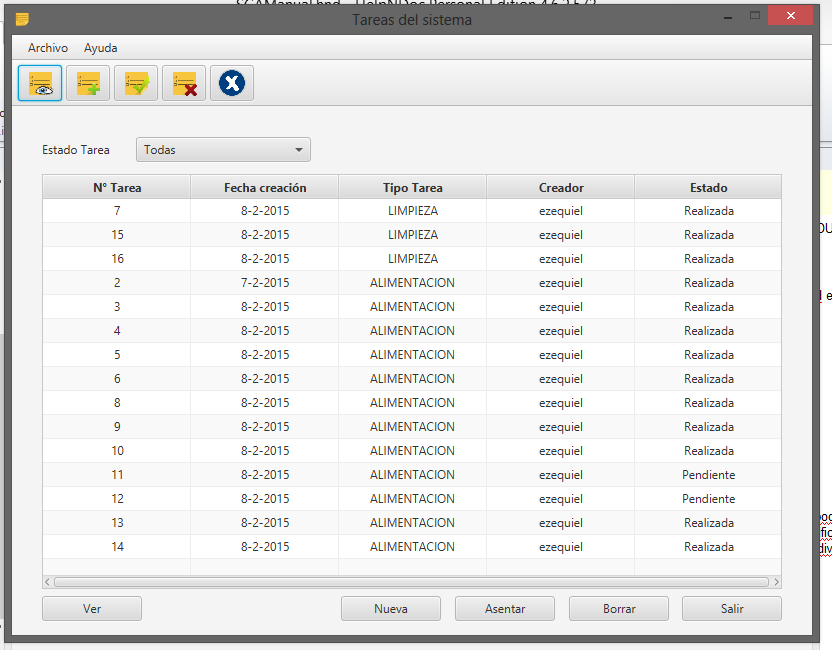

La sección de planificación está pensada como el núcleo del Sistema de Gestión de Acuarios, ya que implica ACUARIOS con sus INDIVIDUOS y RECURSOS. La sección de planificación brinda las siguientes posibilidades:

Todas las actividades están pensadas como acciones INDIVISIBLES a realizar sobre un acuario, ésto implica que cualquier actividad no podrá contener tareas compuestas, por ejemplo, si se desea planificar una alimentación y una limpieza, deberán registrarse dos actividades diferentes en la planificación, lo mismo ocurre para dos alimentaciones con distinto tipo de alimento, para un acuario en común, es decir, alimentaciones dirigidas a diferentes especies de individuos alojados.
Created with the Personal Edition of HelpNDoc: iPhone web sites made easy